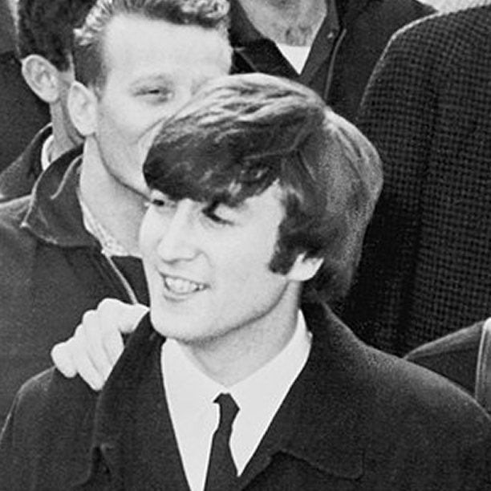
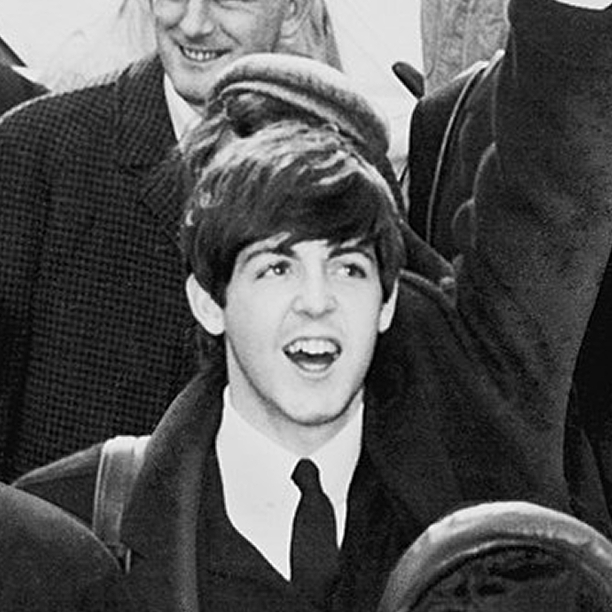
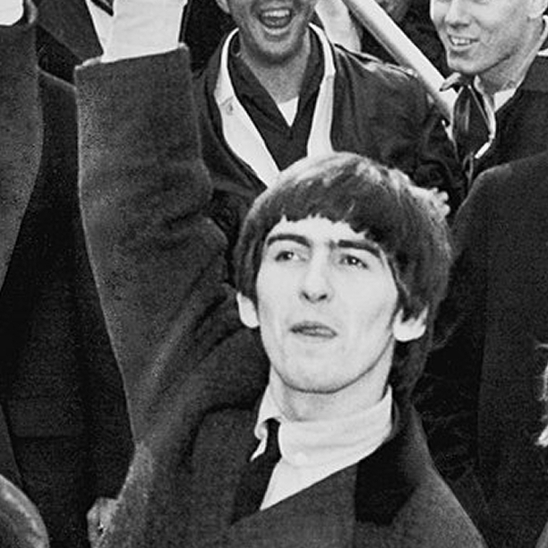
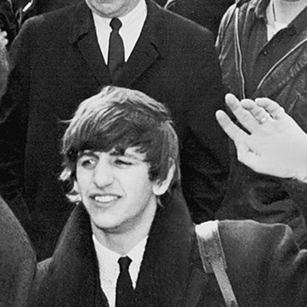

John Lennon (Liverpool, 9 ottobre 1940 – New York, 8 dicembre 1980). L'anima dei Beatles.

Paul McCartney (Liverpool, 18 giugno 1942). Il cuore dei Beatles.

George Harrison (Liverpool, 25 febbraio 1943 – Los Angeles, 29 novembre 2001). Lo spirito dei Beatles.

Richard Starkey aka Ringo (Liverpool, 7 luglio 1940). Il batterista dei Beatles.